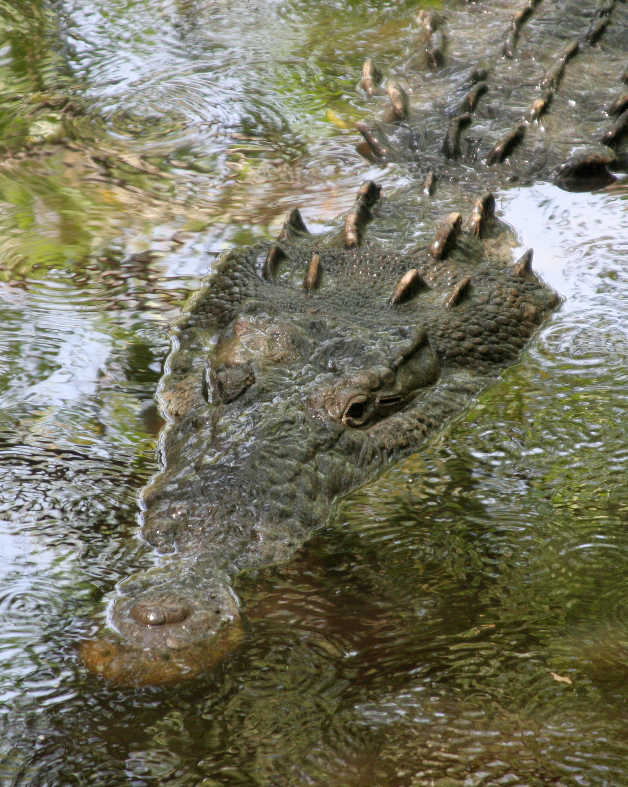
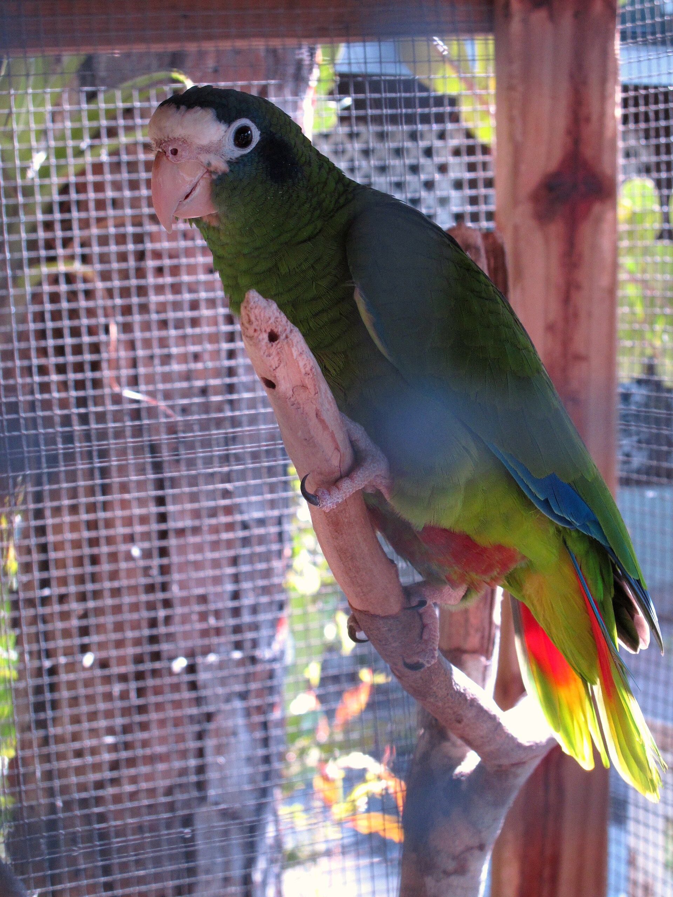
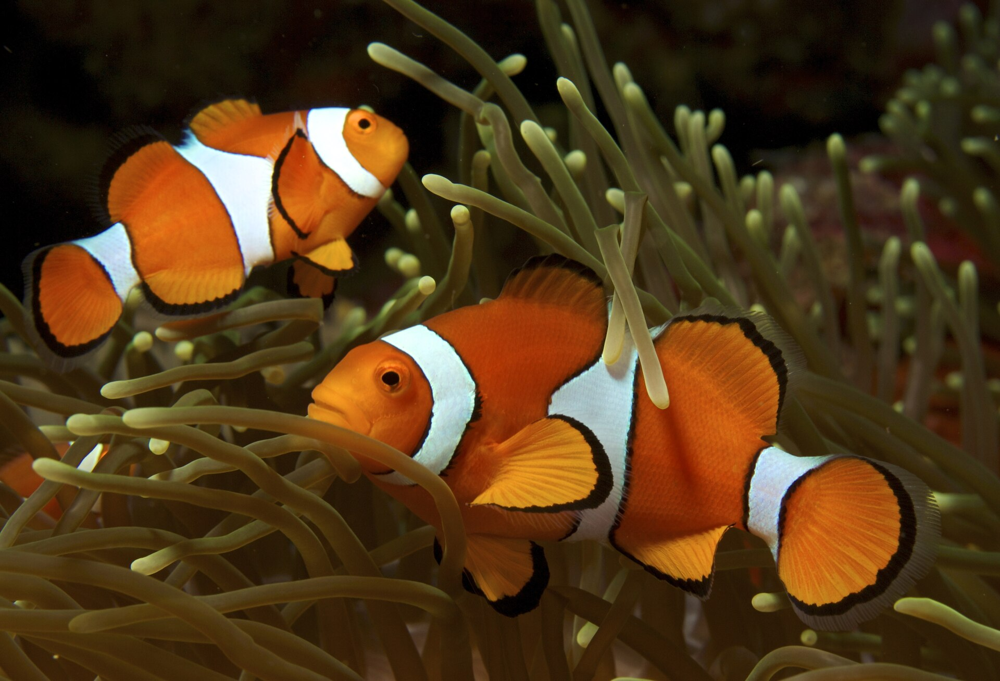

Mamíferos
Del imponente león africano al chimpancé, nuestro pariente más cercano: la clase de vertebrados a la que también pertenecemos.
Leer másNaturaleza, educación y conservación en el corazón de la República Dominicana. Ven y conoce la vida salvaje como nunca antes.
Tres grandes grupos te esperan en el ZOODOM. Elige uno y comienza tu recorrido.
Del imponente león africano al chimpancé, nuestro pariente más cercano: la clase de vertebrados a la que también pertenecemos.
Leer más
Escamas, paciencia y millones de años de evolución: cocodrilos ancestrales y pitones majestuosas te esperan.
Leer más
De la cotorra frente azul —endémica de nuestra isla— al majestuoso pelícano marrón: alas, color y canto caribeño.
Leer más
Del pez payaso a la ballena jorobada de Samaná: los colores y gigantes que pueblan los mares dominicanos.
Leer másToca «Ver en 3D» en cada tarjeta · Modelos vía Poly Pizza (Poly by Google, Quaternius) y three.js
Un adelanto de lo que podrás vivir visitando nuestro parque.